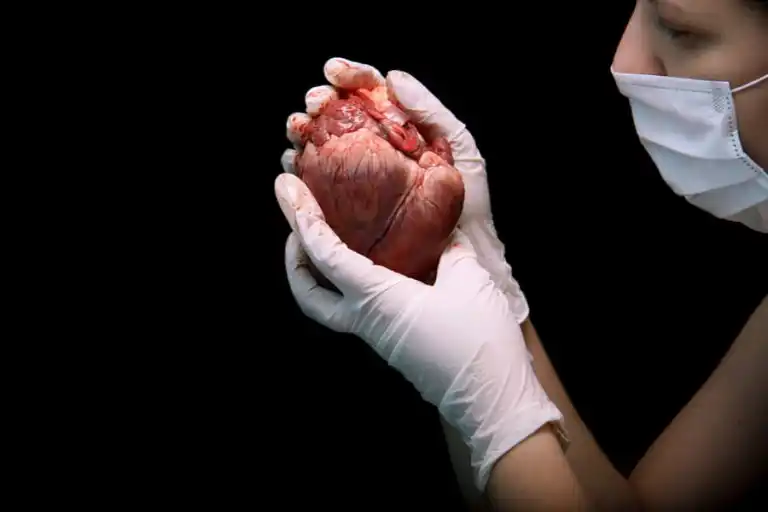

Seja bem vindos a clinica que cuida de seu coração

Nossa clinica já está a mais de 20 anos no mercado prorporcionando um atendimento de qualidade, com os melhores profissionais
realizamos diversos tipos de tratamento e procedimentos Cardiacos, além de ser referência em transplântes de coração.
Temos um ambiente para atendimento personalizado, com salas que tem a tecnologia de ponta para o diagnostico do paciente.
Nosso Blog Cuide do seu Coração
Aqui você vê os melhores blogs sobre a saúde do seu coração, além de muito aprendizado.
Você sabe a importância de cuidar do coração? 
As doenças cardíacas são uma das principais causas de morte no mundo, sendo, segundo a Organização Mundial da Saúde (OMS),
responsáveis por mais de 70% dos óbitos registrados.
Devido à gravidade da condição, cada vez mais pacientes têm buscado maneiras de evitar problemas no coração para garantir uma vida saudável no presente e no futuro.
Lista de alimentos bons para a saúde do coração
Existem muitos alimentos que atuam diretamente na prevenção de doenças cardíacas e minimizam os problemas cardiovasculares. Você verá a seguir
uma lista com alimentos bons para o coração e como eles atuam no seu organismo.
- Salmão
- Aveia
- Abacate
- Azeite
- Nozes
- Frutas Vermelhas
- Leguminosas
- Espinafre
- Linhaça
Você sabe como é feito um transplante de coração?
Um transplante de coração é uma operação em que o coração saudável de um doador serve como um substituto para o coração doente de um receptor.
Essa cirurgia geralmente é realizada quando o tratamento que o paciente estava fazendo não surtiu os resultados esperados. Assim, a doença continua e piora, causando insuficiência cardíaca.

O transplante de coração é uma operação complexa. No entanto, a taxa de sobrevivência é alta se o procedimento for realizado adequadamente.
O transplante, de maneira genérica, deve ser realizado dentro de quatro horas após a extração. É por isso que os corações são oferecidos primeiro aos centros de transplante perto de onde o doador está localizado.
Durante o procedimento:
Trata-se de uma cirurgia cardíaca aberta.
O processo de transplante de coração leva várias horas. Além disso, caso o paciente já tenha feito outras cirurgias cardíacas anteriores, a operação será mais complicada e levará ainda mais tempo.
Durante o procedimento, além do uso de anestesia geral, é essencial ter uma máquina de circulação extracorpórea. Ela mantém o sangue rico em oxigênio do paciente circulando no corpo.
O profissional, através de uma incisão no peito, abrirá a caixa torácica para operar o coração. Após remover o coração doente e inserir o coração do doador, o cirurgião conecta os vasos sanguíneos correspondentes.
Então, o fluxo sanguíneo é restaurado.
Existe a opção, em certos casos, de realizar um transplante de múltiplos órgãos.
Ou seja, realizar o transplante de outro órgão, como pulmão, fígado ou rim, ao mesmo tempo em que ocorre o transplante de coração.
Agende agora mesmo sua visita. | Rua lourenço 888 bairro california |